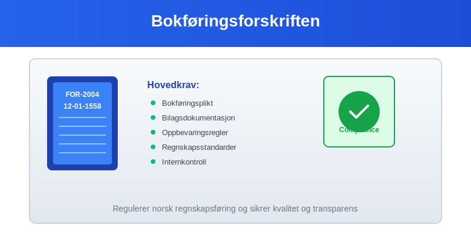
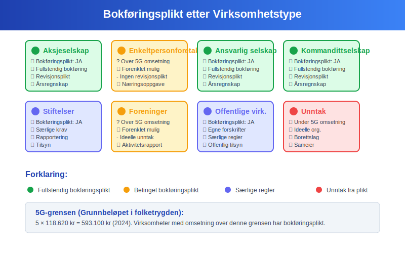
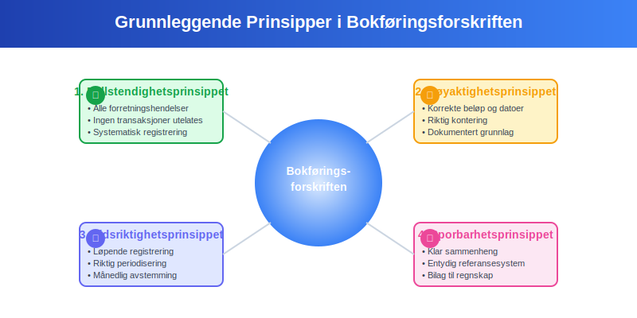
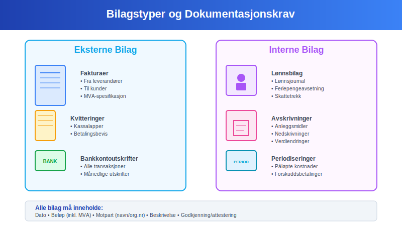
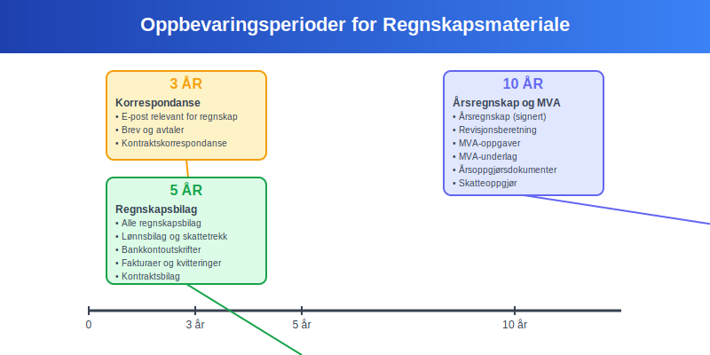
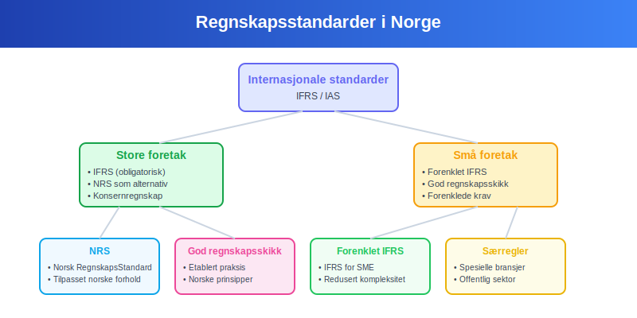
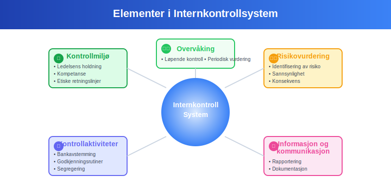
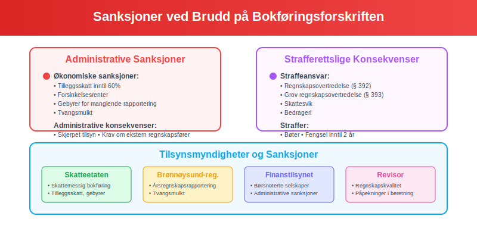
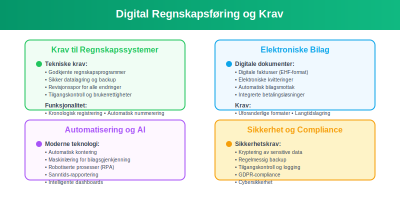
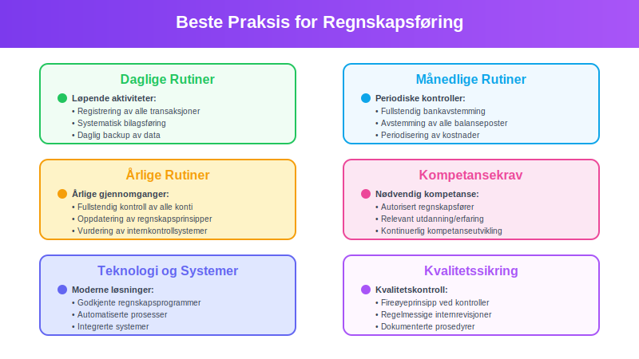

Bokføringsforskriften er det sentrale regelverket som regulerer hvordan norske virksomheter skal føre regnskap. Forskriften fastsetter detaljerte krav til bokføringsplikt, bilagsføring, oppbevaring og regnskapsstandarder for å sikre transparent og korrekt regnskapsføring.

Hva er Bokføringsforskriften?
Bokføringsforskriften (FOR-2004-12-01-1558) er en forskrift gitt med hjemmel i bokføringsloven og regnskapsloven. Den utdyper og presiserer kravene i disse lovene og gir praktiske retningslinjer for hvordan virksomheter skal:
- Organisere og strukturere regnskapsføringen
- Dokumentere alle forretningshendelser med bilag
- Oppbevare regnskapsmateriale på forskriftsmessig måte
- Rapportere finansiell informasjon til myndigheter
- Sikre sporbarhet og kontrollmuligheter
Forskriftens Formål
Bokføringsforskriften har flere hovedformål:
- Standardisere regnskapspraksis på tvers av virksomheter
- Sikre at regnskapet gir et rettvisende bilde av virksomhetens økonomiske situasjon
- Legge til rette for effektiv skatteinnkreving og tilsyn
- Beskytte kreditorer, investorer og andre interessenter
- Fremme åpenhet og tillit i næringslivet
Bokføringsplikt og Virkeområde

Hvem har Bokføringsplikt?
Bokføringsforskriften gjelder for alle som er bokføringspliktige etter bokføringsloven:
| Virksomhetstype | Bokføringsplikt | Særlige krav |
|---|---|---|
| Aksjeselskap | Ja | Fullstendig bokføring |
| Enkeltpersonforetak | Ja (over 5G omsetning) | Forenklet mulig |
| Ansvarlig selskap | Ja | Fullstendig bokføring |
| Kommandittselskap | Ja | Fullstendig bokføring |
| Stiftelser | Ja | Særlige rapporteringskrav |
| Foreninger | Ja (over 5G omsetning) | Forenklet mulig |
| Offentlige virksomheter | Ja | Egne forskrifter |
Unntak fra Bokføringsplikt
Følgende virksomheter er unntatt fra bokføringsplikt:
- Enkeltpersonforetak med omsetning under 5G (ca. 560.000 kr)
- Ideelle organisasjoner uten økonomisk virksomhet
- Borettslag og sameier (egne regler)
- Offentlige myndigheter (følger egne regelverk)
Krav til Regnskapsføring
Grunnleggende Prinsipper
Bokføringsforskriften bygger på flere grunnleggende prinsipper:

1. Fullstendighetsprinsippet
- Alle forretningshendelser skal registreres
- Ingen transaksjoner skal utelates
- Systematisk registrering av alle økonomiske hendelser
2. Nøyaktighetsprinsippet
- Korrekte beløp og datoer
- Riktig kontering og klassifisering
- Dokumentert grunnlag for alle posteringer
3. Tidsriktighetsprinsippet
- Løpende registrering av transaksjoner
- Riktig periodisering av inntekter og kostnader
- Månedlig avstemming
4. Sporbarhetsprinsippet
- Klar sammenheng mellom bilag og bokføring
- Entydig referansesystem
- Mulig å følge transaksjoner fra bilag til regnskap
Krav til Regnskapssystem
Bokføringsforskriften stiller spesifikke krav til regnskapssystemet:
- Kronologisk registrering av alle transaksjoner
- Systematisk kontoplan basert på Norsk Standard Kontoplan
- Sikker lagring og backup av regnskapsdata
- Tilgangskontroll og brukerrettigheter
- Revisjonsspor for alle endringer
Bilagskrav og Dokumentasjon
Obligatoriske Bilag
Alle regnskapsføringer må være dokumentert med godkjente bilag:

Eksterne Bilag
- Fakturaer fra leverandører
- Kvitteringer og kassalapper
- Bankkontoutskrifter
- Lønnslipper og skattetrekk
- Tollpapirer og fraktbrev
Interne Bilag
- Lønnsjournal og feriepengeavsetning
- Avskrivninger og nedskrivninger
- Periodiseringer og avsetninger
- Interne overføringer
- Korreksjonsposteringer
Krav til Bilagsinnhold
Alle bilag må inneholde minimum informasjon:
| Opplysning | Krav | Eksempel |
|---|---|---|
| Dato | Transaksjonsdato | 15.03.2024 |
| Beløp | Inkl. MVA-spesifikasjon | 12.500 kr (10.000 + 2.500 MVA) |
| Motpart | Navn og org.nr | Leverandør AS (123456789) |
| Beskrivelse | Hva som er kjøpt/solgt | Kontorrekvisita mars 2024 |
| Godkjenning | Signatur/attestering | Signert av innkjøpsansvarlig |
Oppbevaringsregler
Oppbevaringsperioder
Bokføringsforskriften fastsetter strenge krav til oppbevaring av regnskapsmateriale:

| Dokumenttype | Oppbevaringsperiode | Særlige krav |
|---|---|---|
| Regnskapsbilag | 5 år | Originaler eller godkjente kopier |
| Årsregnskap | 10 år | Signerte eksemplarer |
| Revisjonsberetning | 10 år | Originaldokument |
| Lønnsbilag | 5 år | Inkl. skattetrekk og avgifter |
| MVA-oppgaver | 10 år | Inkl. underlagsdokumentasjon |
| Korrespondanse | 3 år | Relevant for regnskapet |
Krav til Oppbevaringsform
Dokumenter kan oppbevares i ulike former:
Fysisk Oppbevaring
- Originaldokumenter i brannsikre arkiv
- Systematisk organisering og merking
- Tilgangskontroll og sikkerhet
Digital Oppbevaring
- Godkjente skanning- og arkiveringssystemer
- Uforanderlige filformater (PDF/A)
- Backup og gjenopprettingsrutiner
- Tilgjengelighet gjennom hele oppbevaringsperioden
Oppbevaringssted
Regnskapsmateriale skal oppbevares:
- I Norge (hovedregel)
- Tilgjengelig for norske myndigheter
- Organisert slik at det lett kan fremfinnes
- Beskyttet mot ødeleggelse og uautorisert tilgang
Regnskapsstandarder og Prinsipper
Anvendelige Standarder
Bokføringsforskriften henviser til anerkjente regnskapsstandarder:

For Store Foretak
- IFRS (International Financial Reporting Standards)
- Norsk RegnskapsStandard (NRS) som alternativ
- Særlige krav til konsernregnskap
Små Foretak
- Forenklet IFRS for små foretak
- God regnskapsskikk som grunnlag
- Forenklede rapporteringskrav
Sentrale Regnskapsprinsipper
Transaksjonsprinsippet
- Registrering ved faktisk gjennomføring
- Dokumentert grunnlag for alle posteringer
- Objektiv verdsetting
Opptjeningsprinsippet
- Inntekter føres når de er opptjent
- Kostnader føres når de er pådratt
- Periodisering av inntekter og kostnader
Sammenstillingsprinsippet
- Kostnader matches mot tilhørende inntekter
- Samme periode for relaterte poster
- Korrekt resultatmåling
Forsiktighetsprinsippet
- Konservativ verdsetting av eiendeler
- Umiddelbar kostnadsføring av tap
- Forsiktig inntektsføring
Kontroll og Tilsyn
Internkontroll
Bokføringsforskriften krever etablering av internkontroll:

Kontrollmiljø
- Ledelsens holdning til regnskapskvalitet
- Kompetanse og ansvarsfordeling
- Etiske retningslinjer
Risikovurdering
- Identifisering av regnskapsrisiko
- Vurdering av sannsynlighet og konsekvens
- Tiltak for risikohåndtering
Kontrollaktiviteter
- Månedlig bankavstemming
- Periodisk avstemming av alle konti
- Godkjenningsrutiner for transaksjoner
- Segregering av oppgaver
Offentlig Tilsyn
Flere myndigheter fører tilsyn med overholdelse av bokføringsforskriften:
| Myndighet | Tilsynsområde | Sanksjoner |
|---|---|---|
| Skatteetaten | Skattemessig bokføring | Tilleggsskatt, gebyrer |
| Brønnøysundregistrene | Årsregnskapsrapportering | Tvangsmulkt |
| Finanstilsynet | Børsnoterte selskaper | Administrative sanksjoner |
| Revisor | Regnskapskvalitet | Påpekninger i revisjonsberetning |
Sanksjoner og Konsekvenser
Administrative Sanksjoner
Brudd på bokføringsforskriften kan medføre alvorlige konsekvenser:

Økonomiske Sanksjoner
- Tilleggsskatt på inntil 60% av skatten
- Forsinkelsesrenter på utestående beløp
- Gebyrer for manglende rapportering
- Tvangsmulkt ved forsinkede innleveringer
Administrative Konsekvenser
- Skjerpet tilsyn fra skattemyndighetene
- Krav om ekstern regnskapsfører
- Inndragelse av autorisasjoner
- Offentliggjøring av overtredelser
Strafferettslige Konsekvenser
Alvorlige brudd kan medføre straffeansvar:
- Regnskapsovertredelse (§ 392 i straffeloven)
- Grov regnskapsovertredelse (§ 393 i straffeloven)
- Skattesvik ved bevisst feilrapportering
- Bedrageri ved manipulasjon av regnskapet
Digitalisering og Moderne Krav
Elektronisk Regnskapsføring
Bokføringsforskriften er tilpasset moderne teknologi:

Krav til Regnskapssystemer
- Godkjente regnskapsprogrammer
- Sikker datalagring og backup
- Revisjonsspor for alle endringer
- Tilgangskontroll og brukerrettigheter
Elektroniske Bilag
- Digitale fakturaer (EHF-format)
- Elektroniske kvitteringer og bilag
- Automatisk bilagsmottak
- Integrerte betalingsløsninger
Automatisering og AI
Moderne regnskapsføring benytter avansert teknologi:
- Automatisk kontering av standardtransaksjoner
- Maskinlæring for bilagsgjenkjenning
- Robotiserte prosesser for rutineoppgaver
- Sanntids-rapportering og dashboards
Beste Praksis og Anbefalinger
Etablering av Gode Rutiner
For å sikre overholdelse av bokføringsforskriften:

Daglige Rutiner
- Løpende registrering av alle transaksjoner
- Systematisk bilagsføring
- Daglig backup av regnskapsdata
- Kontroll av banktransaksjoner
Månedlige Rutiner
- Fullstendig bankavstemming
- Avstemming av alle balanseposter
- Gjennomgang av åpne poster
- Periodisering av kostnader og inntekter
Årlige Rutiner
- Fullstendig gjennomgang av alle konti
- Oppdatering av regnskapsprinsipper
- Vurdering av internkontrollsystemer
- Kompetanseutvikling for regnskapspersonell
Kompetansekrav
Bokføringsforskriften forutsetter tilstrekkelig kompetanse:
| Rolle | Kompetansekrav | Sertifisering |
|---|---|---|
| Regnskapsfører | Autorisasjon fra Finanstilsynet | Obligatorisk |
| Regnskapsmedarbeider | Relevant utdanning/erfaring | Anbefalt |
| Daglig leder | Grunnleggende regnskapsforståelse | Nødvendig |
| Styremedlemmer | Finansiell kompetanse | Påkrevd |
Fremtidige Utviklingstrekk
Teknologiske Endringer
Bokføringsforskriften må tilpasses nye teknologier:
- Blokkjede-teknologi for uforanderlige regnskaper
- Kunstig intelligens for automatisk regnskapsanalyse
- Sanntids-rapportering til myndigheter
- Integrerte systemer på tvers av virksomheter
Regulatoriske Endringer
Forventede endringer i regelverket:
- Strengere krav til cybersikkerhet
- Utvidede rapporteringskrav for bærekraft
- Harmonisering med EU-regelverk
- Forenkling for små virksomheter
Konklusjon
Bokføringsforskriften er fundamentet for norsk regnskapsføring og sikrer kvalitet, transparens og tillit i næringslivet. Ved å følge forskriftens krav kan virksomheter:
- Oppfylle alle lovpålagte forpliktelser
- Sikre korrekt og pålitelig regnskapsinformasjon
- Minimere risiko for sanksjoner og tilsynsreaksjoner
- Bygge tillit hos interessenter og myndigheter
- Legge grunnlag for god forretningsstyring
Regelmessig oppdatering av kunnskap om bokføringsforskriften og investering i kompetente ressurser er avgjørende for å lykkes med regnskapsføringen i en stadig mer kompleks og digitalisert verden.
For virksomheter som ønsker å sikre full overholdelse av bokføringsforskriften, anbefales det å etablere robuste rutiner, investere i moderne regnskapssystemer og sikre tilstrekkelig kompetanse i organisasjonen.